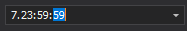

Mask Type: TimeSpan
Overview
The TimeSpan mask type allows users to enter time intervals. This type supports the standard time span .NET format.
Standard Masks
The table below contains input masks that correspond to the standard patterns. These patterns do not depend on culture settings.
| Mask | Description | Remarks |
|---|---|---|
c |
Constant Format | Matches the [-][d'.']hh':'mm':'ss['.'fffffff] pattern. |
g |
General Short Format | Matches the [-][d':']h':'mm':'ss[.FFFFFFF] pattern. |
G |
General Long Format | Matches the [-]d':'hh':'mm':'ss.fffffff pattern. |
Custom Masks
Mask specifiers and modifiers in the table below allow you to create custom time span input masks.
| Specifier/Placeholder | Description | Remarks |
|---|---|---|
d |
Number of whole days. | Allows a user to enter days. Any number of digits, with no leading zeros. |
dd-dddddddd |
Number of whole days. | Allows a user to enter days. The number of d characters specifies the minimum number of digits. The value is padded with leading zeros as needed. Does not limit the maximum number of digits and does not limit the entered value. |
D |
Short caption for days. | 'd' in the English (U.S.) locale. |
DD |
Long caption for days. | 'day' or 'days' in the English (U.S.) locale. |
h |
Number of whole hours. | Displays a single digit in the first ten-day interval (1-9). |
hh |
Number of whole hours. | Displays two digits in the first-ten interval (01-09). |
H |
Short caption for hours. | 'h' in the English (U.S.) locale. |
HH |
Long caption for hours. | 'hour' or 'hours' in the English (U.S.) locale |
m |
Number of whole minutes. | Displays a single digit in the first ten-day interval (1-9). |
mm |
Number of whole minutes. | Displays two digits in the first-ten interval (01-09). |
M |
Short caption for minutes. | 'm' in the English (U.S.) locale. |
MM |
Long caption for minutes. | 'minute' or 'minutes' in the English (U.S.) locale. |
s |
Number of whole seconds. | Displays a single digit in the first-ten interval (1-9). |
ss |
Number of whole seconds. | Displays two digits in the first-ten interval (01-09). |
S |
Short caption for seconds. | 's' in the English (U.S.) locale |
SS |
Long caption for seconds. | 'second' or 'seconds' in the English (U.S.) locale. |
n |
Number of whole milliseconds. | Displays a single digit in the first-ten interval (1-9). |
nn |
Number of whole milliseconds. | Displays two digits in the first-ten interval (01-09). |
nnn |
Number of whole milliseconds. | Displays leading zeros. |
N |
Short caption for milliseconds. | 'ms' in the English (U.S.) locale. |
NN |
Long caption for milliseconds. | 'milliseconds' in the English (U.S.) locale. |
f-fffffff |
Number of second fractions. | |
F-FFFFFFF |
Number of second fractions. | Any fractional trailing zeros are not included. |
F1-F7 |
Number of second fractions. | An editor displays zeros for empty placeholders. |
Z |
Short caption for fractional part of seconds. | 'f' in the English (U.S.) locale. |
ZZ |
Long caption for fractional part of seconds. | 'fractional' in the English (U.S.) locale. |
[,] |
Elements in square brackets are optional. | |
: |
Time separator. | Does not depend on the current culture. |
. |
Decimal separator. | Depends on the current culture. |
%<specifier> |
The '%' modifier that precedes a mask specifier distinguishes the specifier from the same standard mask pattern (see above). | If a mask specifier is used without other specifiers, it can be interpreted as a standard pattern. For example, the 'd' specifier is interpreted as the standard short date pattern, but not a month day. Precede the specifier with the '%' modifier to interpret it as a placeholder. |
\<character> |
The backslash modifier is the escape character. | Precede a specifier with the backslash modifier to display the specifier as a character in the edit box. |
| Any other characters. | Any other characters are displayed in the edit box literally. |
Example 1
d'.'hh':'mm':'ss - allows users to input days, hours, minutes, and seconds. The ‘.‘ and ‘:‘ characters are separators.

Example 2
d DD 'left' - allows users to input days. Displays custom text and the ‘days‘ caption according to the culture.